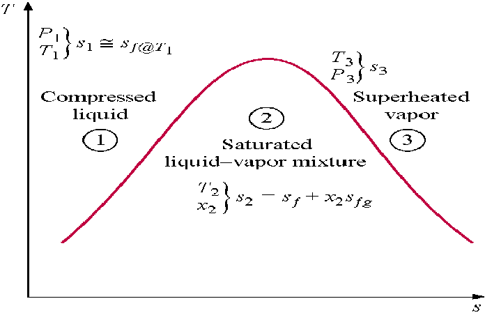
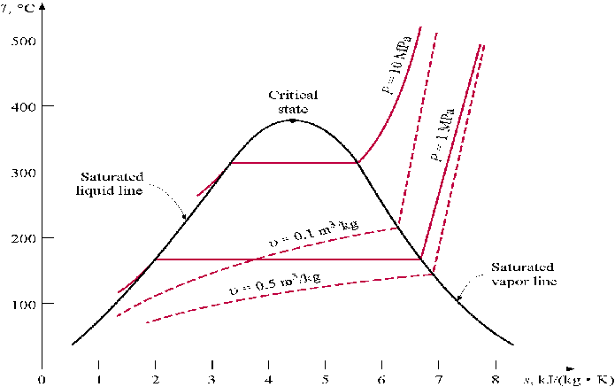

MODULE 12: CHANGES IN ENTROPY
(fragments of the CD that comes with
Cengel&Boles's book "Thermodynamics", 3-d edition, McGraw-Hill,
1998)
Class notes (start)
Entropy as a Property
Entropy is a property, and it can be expressed in terms of more familiar properties (T,P,v) through the Tds relations. These relations come from the analysis of a reversible closed system which does boundary work and has heat added. Writing the first law for the closed system in differential form on a per unit mass basis
on a unit mass basis we obtain the first Tds equation, or Gibbs equation as
Recall that the enthalpy is related to the internal energy by h = u + Pv. Using this relation in the above equation, the second Tds equation is
These last two relations have many uses in thermodynamics and serve as the starting point in developing entropy-change relations for processes. The successful use of Tds relations depends on the availability of property relations. Such relations do not exist in an easily used form for a general pure substance but are available for incompressible substances (liquids, solids) and ideal gases. So, for the general pure substance, such as water and the refrigerants, we must resort to property tables to find values of entropy and entropy changes.
The temperature-entropy diagrams for water are shown below.

